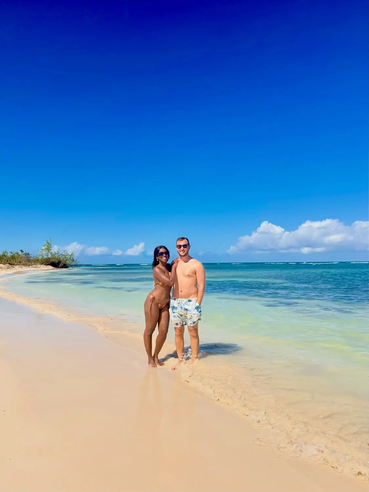
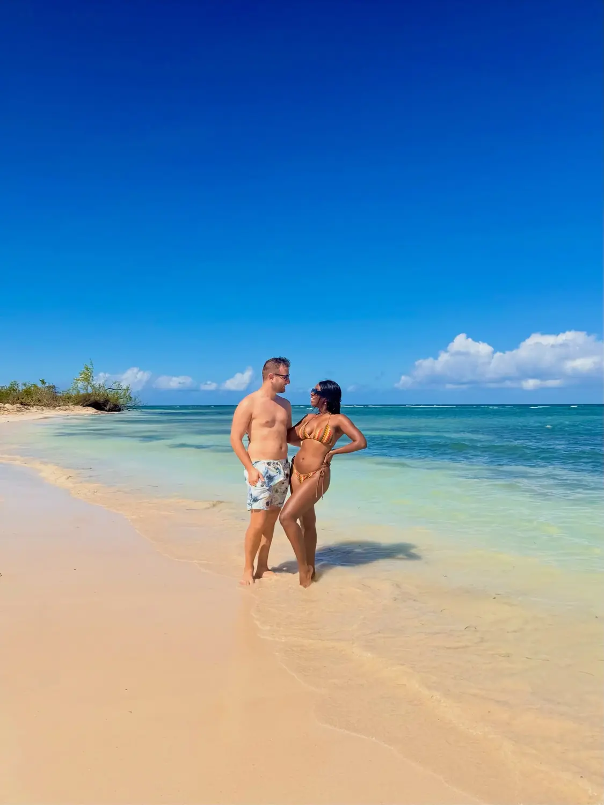
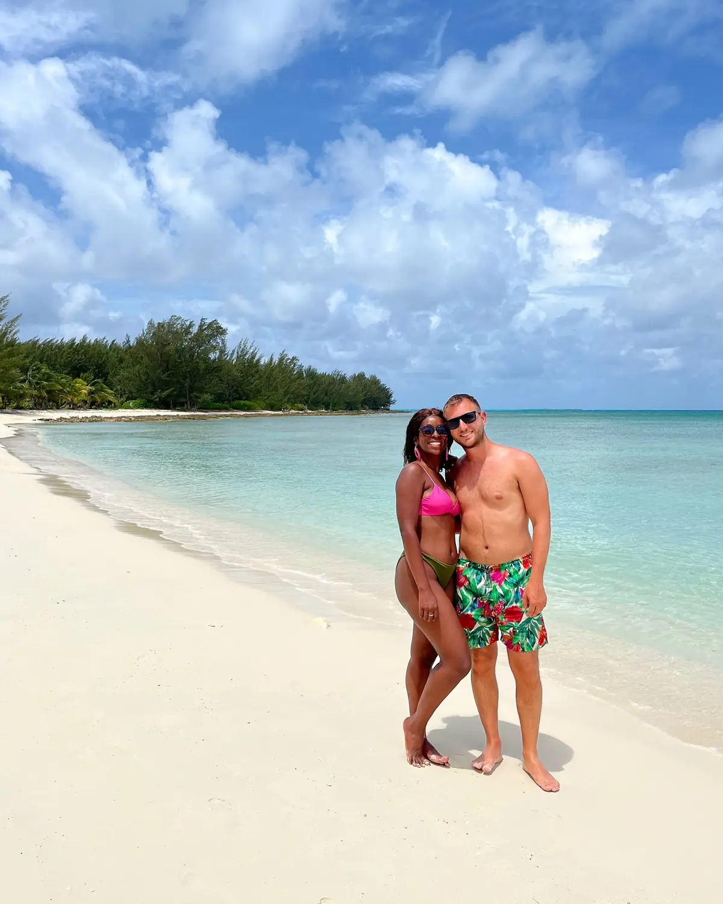

Sea & sand01
The beaches & crystal-clear water
📍 Jamaica's north coast, around Falmouth
The water here genuinely lived up to the postcards — warm, calm and so clear you can see your feet in the shallows. The north-coast beaches around Falmouth and neighbouring Montego Bay are the easy, do-nothing highlight: soft pale sand, gentle turquoise water and reggae drifting from the beach bars. Bring reef-safe sunscreen and just settle in.
Crystal-clear waterCalm & swimmable